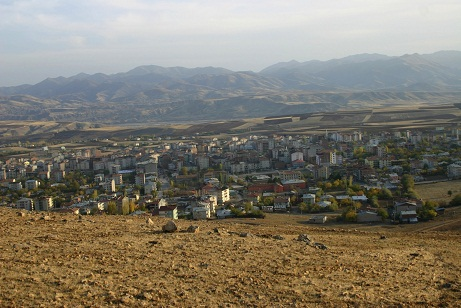
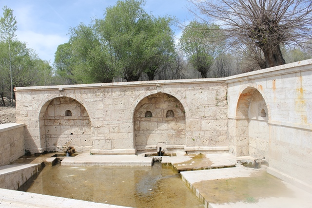
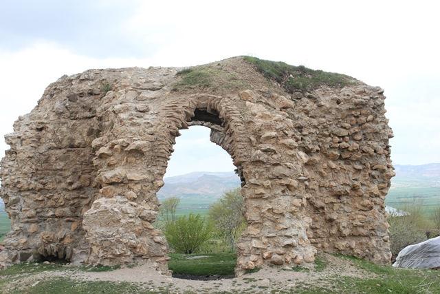

İlçenin nüfusu 2019 yılı verilerine göre 39.079'dur.Elazığ il merkezine uzaklığı 67 km olan ilçe 1988 yılında ilçe olmuştur. İlçenin en önemli kültürel varlıkları arasında ; Çakırkaş ( Hoşmat) Kilisesi, Ekinözü Çeşmesi ve İbrahim Bey Sarayı bulunmaktadır.İlçe halkının % 80’i tarım ve hayvancılıkla uğraşmaktadır. Halkın geriye kalan % 20’si yurtdışında çeşitli ülkelerde işçi olarak çalışmaktadır.Yurtdışında çalışmakta olan işçilerin İlçenin kalkınmasında özellikle konut alanında büyük katkısı olmuştur.
İlçenin nüfusu 2019 yılı verilerine göre 39.079'dur.Elazığ il merkezine uzaklığı 67 km olan ilçe 1988 yılında ilçe olmuştur. İlçenin en önemli kültürel varlıkları arasında ; Çakırkaş ( Hoşmat) Kilisesi, Ekinözü Çeşmesi ve İbrahim Bey Sarayı bulunmaktadır.İlçe halkının % 80’i tarım ve hayvancılıkla uğraşmaktadır. Halkın geriye kalan % 20’si yurtdışında çeşitli ülkelerde işçi olarak çalışmaktadır.Yurtdışında çalışmakta olan işçilerin İlçenin kalkınmasında özellikle konut alanında büyük katkısı olmuştur.


İlçe genelinde susuz tarım yapılmakta olup, ilçe merkezi ve köylerinde 1992 yılında Palu-Kovancılar Sulama Projesinin bitirilmesi ile sulu tarıma başlanılmıştır. Elazığ’ın en büyük sanayi kuruluşu olan Ferrokrom Fabrikası ilçenin Yarımca beldesinde faaliyet göstermektedir.
